Built-in Tracks
GenomeKit provides access to several genome-wide tracks. Tracks can be used as features and/or targets for molecular phenotype models. (Click to enlarge.)
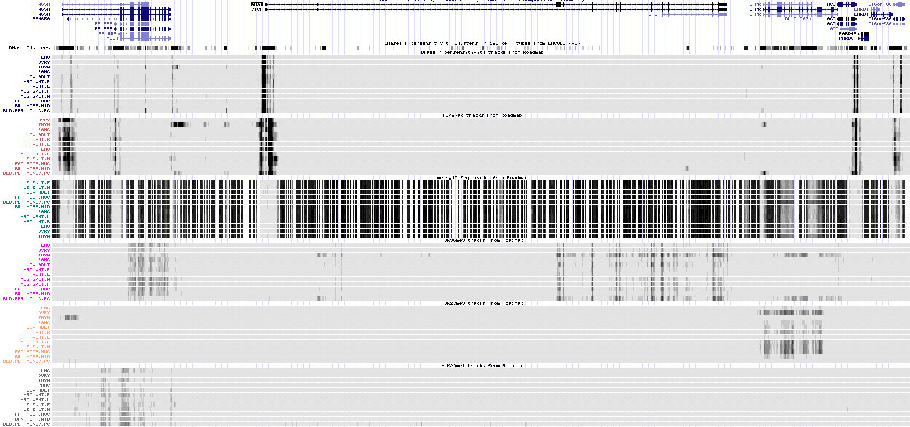Built-in tracks are accessible by methods on a
Genome object:
>>> interval = Interval("chr17", "+", 41246881, 41246886, "h37")
>>> genome = Genome("h37")
>>> genome.phastcons_mammal_46way(interval)
array([[ 0.969],
[ 0.877],
[ 0.556],
[ 0.341],
[ 0.264]], dtype=float16)
Tracks fall into the following categories:
Note
Track encoding.
Some tracks may not perfectly match their raw sources.
Most built-in tracks are encoded into a compact format that
quantizes the numerical values stored therein.
For example, a track of probabilities may be quantized with a 4-bit
representation, so that only values in numpy.linspace(0, 1, 16)
are representable.
In some cases, the track is also deliberately sparsified for the sake of
disk space.
For example, in a given particular track, all values within a certain
range may be deemed noise or weak signal, and therefore deliberately
collapsed to 0 so that these values are omitted from the file.
Conservation
GERP
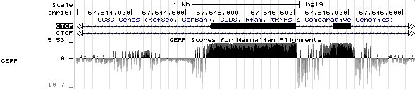Genomic Evolutionary Rate Profiling (GERP) identifies sites under evolutionary constraint, i.e. sites that show fewer substitutions than would be expected to occur during neutral evolution.
GERP scores are accessible by the
gerp() method:
>>> interval = Interval("chr7", "+", 117250573, 117250579, "h37")
>>> genome.gerp(interval)
array([[ 5.887],
[ 2.943],
[-11.773],
[ 5.887],
[ -2.061],
[ -0.588]], dtype=float16)
The GERP track is 1-dimensional, with values in the range [-12.36, 6.18]. Positive values indicate a site under constraint. Sites at which no Gerp score is available are assigned a background value of 0.
The track provided here is the UCSC version, which is based on GERP++ and alignment of the human reference genome to 35 mammalian species. GERP++ aggregates these sites into longer, potentially functional sequences called constrained elements.
Availability: hg19 only, but hg38 in future release.
Links:
PhastCons and PhyloP
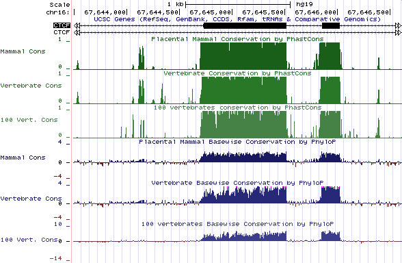These tracks are based on the phastCons and phylop tools. Scores are accessible by the following methods:
For example:
>>> interval = Interval("chr17", "+", 41246881, 41246886, "h37")
>>> genome.phastcons_mammal_46way(interval)
array([[ 0.969],
[ 0.877],
[ 0.556],
[ 0.341],
[ 0.264]], dtype=float16)
>>> genome.phylop_mammal_46way(interval)
array([[ 3.055],
[ 0.877],
[ 0.826],
[ 0. ],
[ 0.877]], dtype=float16)
These tracks are all 1-dimensional. PhastCons scores indicate consistency across multiple sequence alignments, and are in range [0,1]. PhyloP scores represent of p-values for conserved or accelerated evolution.
Availability:
Todo
@kzuberi add phastcons/phylop range details and availability; they depend on 46way vs 100way etc.
Links:
UCSC track settings (46 species)
UCSC track settings (100 species)
phastCons paper (PDF)
phyloP paper (PDF)
phastCons and phyloP are part of the PHAST package.
Mappability
ENCODE Mappability
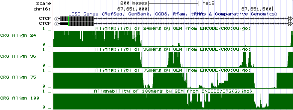Mappability measures how unique short sequences are along the reference genome. Scores are in range [0,1] where 1 indicates position that is uniquely mappable to DNA across all window offsets. A low score indicates a position where short-read alignments to DNA may be unreliable.
Scores are accessible via the
encode_mappability() method:
>>> interval = Interval("chr16", "+", 67650971, 67650979, "h37")
>>> genome.encode_mappability(interval, window_size=36)
array([[ 1. ],
[ 0.333],
[ 0.200],
[ 0. ],
[ 0. ],
[ 0. ],
[ 0. ],
[ 0. ]], dtype=float16)
>>> genome.encode_mappability(interval, window_size=[24, 36, 75, 100])
array([[ 0.333, 1. , 1. , 1. ],
[ 0. , 0.333, 1. , 1. ],
[ 0. , 0.200, 1. , 1. ],
[ 0. , 0. , 1. , 1. ],
[ 0. , 0. , 1. , 1. ],
[ 0. , 0. , 1. , 1. ],
[ 0. , 0. , 1. , 1. ],
[ 0. , 0. , 0.333, 1. ]], dtype=float16)
Here window_size is the size of sliding window being checked for uniqueness genome-wide. It must be one of [24, 36, 75, 100], or a list of any of those numbers.
Availability: hg19 only.
Links:
RNA secondary structure
RNAplfold unpaired probabilities
This track estimates the probability that a pre-mRNA position remains unpaired after folding. Values are in the range [0,1] where 1 indicates a high probability of being unpaired. The track is strand-sensitive and defined only in genic intervals (Ensemble+RefSeq), so beware NaNs. The estimate is computed by the RNAplfold tool that is part of the Vienna RNA software suite.
Probabilities are accessible via the
rnaplfold_unpair_prob() method:
>>> interval = Interval("chr7", "+", 117250572, 117250584, "h37")
>>> genome.rnaplfold_unpair_prob(interval)
array([[ 0.067],
[ 0.067],
[ 0.067],
[ 0.733],
[ 0.933],
[ 1. ],
[ 1. ],
[ 0.400],
[ 0.133],
[ 0.133],
[ 0.067],
[ 0. ],
], dtype=float16)
The middle part of the above region forms a 4 bp hairpin loop, similar to the image below. The hairpin classification can be seen more definitively in the RNA secondary structure categories track.
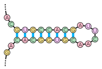The specific settings that were used to generate this track are
RNAplfold -W 200 -L 160 -u 1, that is:
average the probabilities over a sliding window of size 200,
only consider pairing of positions at most 160 bp apart, and
only return the probability that a 1 bp span is unpaired.
Availability: hg19 only, but hg38 in future releases.
Links:
RNA secondary structure categories
This track estimates the probability that a pre-mRNA position will base pair in one of a few standard secondary structure categories. Values are in the range [0,1] where 1 indicates a high probability of being unpaired in that particular category. The track is strand-sensitive and defined only in genic intervals (Ensemble+RefSeq), so beware NaNs. The track is computed by the RNAcontext software, which is a modified version of RNAplfold.
The structural categories represent types of open (unpaired) regions. In order, they are:
external / single-stranded
hairpin loop
internal loop
multiloop
Probabilities are accessible via the
rnaplfold_categories() method:
>>> interval = Interval("chr7", "+", 117250572, 117250584, "h37")
>>> genome.rnaplfold_categories(interval)
array([[ 0. , 0. , 0. , 0. ],
[ 0. , 0. , 0. , 0. ],
[ 0. , 0.067, 0. , 0. ],
[ 0.067, 0.733, 0. , 0. ],
[ 0.067, 0.733, 0.133, 0. ],
[ 0.067, 0.733, 0.200, 0. ],
[ 0.067, 0.733, 0.200, 0. ],
[ 0.067, 0.067, 0.200, 0. ],
[ 0.067, 0. , 0.067, 0. ],
[ 0.067, 0. , 0.067, 0. ],
[ 0. , 0. , 0. , 0. ],
[ 0. , 0. , 0. , 0. ]], dtype=float16)
The middle part of the above region forms a 4 bp hairpin loop.
This track can be thought of as a categorical version of the
RNAplfold unpaired probabilities track.
Note that, due to quantization effects and slightly different versions
of the RNApfold software, the sum along each row may not exactly match the
rnaplfold_unpair_prob() values.
Links:
Nucleosome occupancy
Nucleosome occupancy is the probability that a position is wrapped around a histone octamer. There are two types of tracks: ENCODE nucleosome occupancy (measured), and computed nucleosome occupancy (predicted).
ENCODE nucleosome occupancy
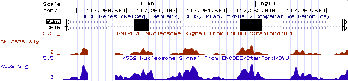These tracks represent genome-wide experimental nucleosome occupancy in two human cell lines. They were created by aligning reads from MNase digestion, shifting them 74 bp downstream, and then smoothing the resulting signal over a 60 bp window.
Occupancy scores are available by the
encode_nucleosome_occupancy() method:
>>> interval = Interval("chr14", "+", 75415612, 75415618, "h37")
>>> genome.encode_nucleosome_occupancy(interval, cell=["K562", "GM12878"])
array([[ 3.600, 4.602 ],
[ 3.600, 4.898 ],
[ 3.600, 4.898 ],
[ 3.600, 4.898 ],
[ 3.801, 4.898 ],
[ 3.801, 4.898 ]], dtype=float16)
The two cell lines supported are K562 and GM12878, so cell can be
"K562" or "GM12878" or a list of both.
Values are typically in range [0,5.5] where higher numbers indicate
higher density. Values below 0.5 were clamped to 0 during construction
to improve track sparsity.
Note. The original ENCODE track contained a small set of regions with extremely high density values (>70). These tended to to appear beside regions of poor mappability, and are likely artifacts. The track presented here has had its maximum density clamped to the typical maximum in uniquely alignable regions, to facilitate more compact encoding and to minimize the potential impact of these large-magnitude density mapping artifacts.
Availability: hg19 only.
Links:
Computed nucleosome occupancy
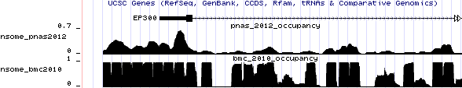These tracks provide computed (predicted) nucleosome occupancy based on two algorithms: PNAS2012 and BMC2010 (NuPoP algorithm). The tracks are defined only in genic intervals (Ensemble, RefSeq), so beware NaNs.
Note
The PNAS2012 and BMC2010 algorithms were trained on yeast, not human cell types.
Occupancy scores are available by the
nucleosome_occupancy_pnas2012() and
nucleosome_occupancy_bmc2010() methods:
>>> interval = Interval("chr22", "+", 41521995, 41522004, "h37")
>>> genome.nucleosome_occupancy_pnas2012(interval)
array([[ 0.271],
[ 0.271],
[ 0.271],
[ 0.248],
[ 0.248],
[ 0.248],
[ 0.248],
[ 0.226],
[ 0.226]], dtype=float16)
The PNAS2012 algorithm is based on the periodic distribution of dinucleotides TA, TT, AA, and GC. Occupancy scores are smooth because the algorithm applies a 10 bp low-pass filter.
The BMC2010 algorithm is an HMM that oscillates between two states: nucleosome (score 1.0) and linker (score 0.0, occasionally -0.05). The nucleosome state has a fixed length of 147 bp.
Availability: hg19 only, but hg38 in future release.
Links:
Chromatin state
Chromatin states are generally predicted by software from other genomic or epigenomic features, such as DNase hypersensitivity and histone modifications. This high-level feature can be used, for example, to identify genes that are expressed in a particular cell type.
Roadmap ChromHMM state
This track contains a probability distribution over 15 chromatin states, as computed by ChromHMM on Roadmap Epigenomics data.
States 0–7 are associated with active chromatin.
TssA(Active TSS; 0.7%)TssAFlnk(Flanks an active TSS; 0.5%)TxFlnk(Transcribed at gene 5p and 3p showing both promoter and enhancer signatures; 0.1%)Tx(Strong transcription; 3.6%)TxWk(Weak transcription; 11.6%)EnhG(Genic enhancer; 0.4%)Enh(Enhancer; 2.8%)ZNF/Rpts(Zinc finger genes and repeats; 0.2%)
States 8–14 are associated with inactive chromatin, with quiescent being the most prevalent state.
Het(Heterochromatin; 2.6%)TssBiv(Bivalent/poised TSS; 0.1%)BivFlnk(Flanking bivalent TSS/enhancer; 0.1%)EnhBiv(Bivalent enhancer; 0.1%)ReprPC(Repressed PolyComb; 1.2%)ReprPCWk(Weakly repressed PolyComb; 8.3%)Quies(Quiescent / low expression; 67.8%)
Below is an example of ChromHMM states across a genomic interval; the colour coding can be found in the UCSC track documentation. (Click to enlarge.)
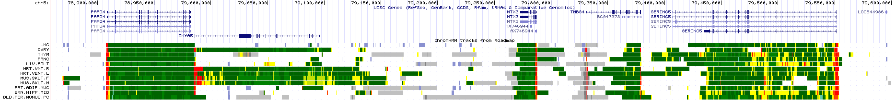Probabilities for these states can be accessed via the
roadmap_chromhmm()
method by specifying one or more cell from
ROADMAP_CELLS:
>>> interval = Interval("chr14", "+", 75415270, 75415274, "h37")
>>> genome.roadmap_chromhmm(interval, cell="LNG")
array([[ 0., 0., 0., 0., 1., 0., 0., 0., 0., 0., 0., 0., 0., 0.],
[ 0., 0., 0., 0., 1., 0., 0., 0., 0., 0., 0., 0., 0., 0.],
[ 0., 0., 0., 0., 1., 0., 0., 0., 0., 0., 0., 0., 0., 0.],
[ 0., 0., 0., 0., 1., 0., 0., 0., 0., 0., 0., 0., 0., 0.]], dtype=float16)
In lung the most probable state for this region is TxWk (4).
Other tissues are available:
>>> genome.roadmap_chromhmm(interval, cell="OVRY")
array([[ 0., 0., 0., 0., 0.355, 0., 0., 0., 0., 0., 0., 0., 0., 0.032],
[ 0., 0., 0., 0., 0.355, 0., 0., 0., 0., 0., 0., 0., 0., 0.032],
[ 0., 0., 0., 0., 0.355, 0., 0., 0., 0., 0., 0., 0., 0., 0.032],
[ 0., 0., 0., 0., 0.355, 0., 0., 0., 0., 0., 0., 0., 0., 0.032]], dtype=float16)
In ovary the most probable state is actually Quies (14) with a probability of
.613 = 1 - .335 - .032, even though this final column is omitted from the track.
If multiple cell types are specified, their state matrices are concatenated horizontally.
Alternatively, one can extract an integer identifying only the most probable state
by the roadmap_chromhmm_max() method:
>>> genome.roadmap_chromhmm_max(interval, cell=["LNG", "OVRY"])
array([[ 4, 14],
[ 4, 14],
[ 4, 14],
[ 4, 14]], dtype=uint8)
The track is represented at 200 bp resolution, so it should primarily be used for analysis of large regions, not individual positions.
Availability: hg19 only.
Links:
UCSC track settings (requires Roadmap Epigenomics Integrative Analysis)
Histone modifications
Roadmap histone modifications
Below is an example of Roadmap histone modification density scores across a genomic interval, alongside other Roadmap tracks for comparison. Many histone modification tracks are very sparse. (Click to enlarge.)
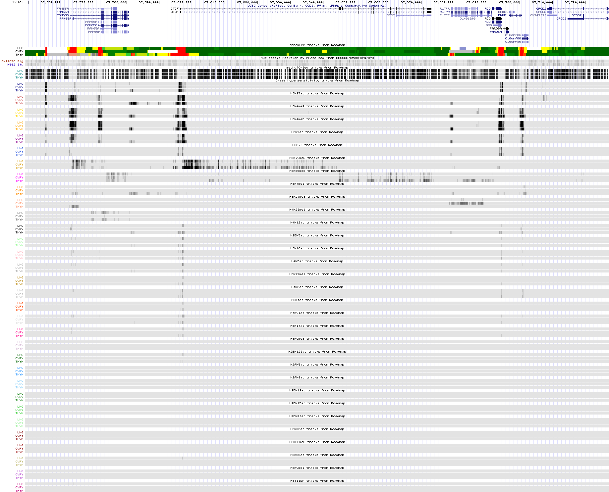Scores can be accessed via the
roadmap_histone_mod()
method by specifying one or more cells from
ROADMAP_CELLS
and one or more histone modifications from
ROADMAP_HISTONE_MODS:
>>> interval = Interval("chr16", "+", 67605146, 67605152, "h37")
>>> genome.roadmap_histone_mod(interval, mod="H3K79me2", cell=["LNG", "OVRY"])
array([[ 8.86, 6.14],
[ 8.86, 6.14],
[ 8.86, 6.14],
[ 8.86, 6.14],
[ 6.91, 7.53],
[ 6.91, 7.53]], dtype=float16)
Values are in range [0, 15]. Values less than 1.75 were clamped to 0 during track construction, and regions where no score is available are assigned a background value of 0.
If multiple modifications are specified, the column order is such that inner stride is over cell types:
>>> genome.roadmap_histone_mod(interval, mod=["H3K79me2", "H3K36me3", "H4K20me1"],
... cell=["LNG", "OVRY"])
array([[ 8.86, 6.14, 2.72, 3.18, 3.13, 2.56],
[ 8.86, 6.14, 2.72, 3.18, 3.13, 2.56],
[ 8.86, 6.14, 2.72, 3.18, 3.13, 2.56],
[ 8.86, 6.14, 2.72, 3.18, 3.13, 2.56],
[ 6.91, 7.53, 2.72, 3.02, 4.97, 2.23],
[ 6.91, 7.53, 2.72, 3.02, 4.97, 2.23]], dtype=float16)
The track is represented at 200 bp resolution, so it should primarily be used for analysis of large regions, not individual positions.
Availability: hg19 only.
Links:
UCSC track settings (requires Roadmap Epigenomics Integrative Analysis Hub)
DNase hypersensitivity
Roadmap DNase hypersensitivity
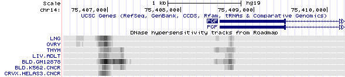These tracks provide DNase hypersensitivity scores from the Roadmap Epigenomics project. DNase hypersensitivity is associated with open chromatin.
Scores can be accessed via the
roadmap_dnase_hypersensitivity()
method by specifying one or more cells from
ROADMAP_CELLS:
>>> interval = Interval("chr14", "+", 75406996, 75407002, "h37")
>>> genome.roadmap_dnase_hypersensitivity(interval, cell=["LNG", "OVRY", "THYM"])
array([[ 25.6, 26.8, 20.0],
[ 25.6, 26.8, 20.0],
[ 25.6, 26.8, 20.0],
[ 25.6, 26.8, 20.0],
[ 21.2, 18.9, 17.3],
[ 21.2, 18.9, 17.3]], dtype=float16)
Values are in range [0, 40]. Values less than 1.75 were clamped to 0 during track construction, and regions with no score are assigned a background value of 0.
Todo
@kzuberi double check that choice of sparsification threshold of 1.75 against data.
The track is represented at 200 bp resolution, so it should primarily be used for analysis of large regions, not individual positions.
Availability: hg19 only.
Links:
UCSC track settings (requires Roadmap Epigenomics Integrative Analysis Hub)
Methylation
Roadmap methylation
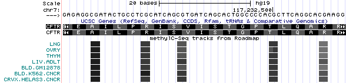This track provides the experimental probability that a CpG site is methylated. The methylC-seq experiments were done as part of the Roadmap Epigenomics project. Methylated DNA usually lowers accessibility to regulatory proteins, thus hampering transcription. Unmethylated DNA is usually associated with open chromatin.
Probabilities can be accessed by the
roadmap_methylation() method:
>>> interval = Interval("chr14", "+", 75413571, 75413579, "h37")
>>> genome.dna(interval)
'AGCGACGG'
>>> genome.roadmap_methylation(interval, cell=["LNG", "OVRY", "THYM"])
array([[ 0. , 0. , 0. ],
[ 0. , 0. , 0. ],
[ 0.267, 0.200, 0.400],
[ 0.267, 0.200, 0.400],
[ 0. , 0. , 0. ],
[ 0.200, 0.133, 0.400],
[ 0.200, 0.133, 0.400],
[ 0. , 0. , 0. ]], dtype=float16)
The two CG dinucleotides in the above interval are methylated
in some fraction of cells. Probabilities are in range [0,1].
Availability: hg19 only.
Links:
UCSC track settings (requires Roadmap Epigenomics Integrative Analysis Hub)
Expression
FANTOM CAGE
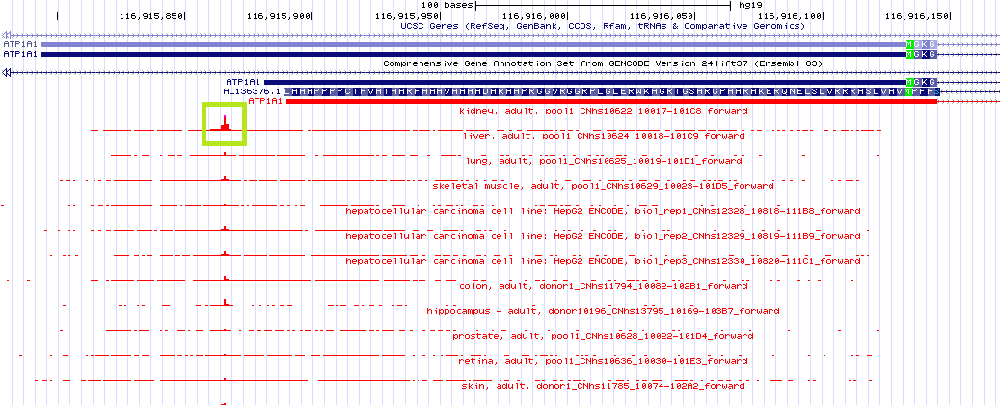CAGE tracks provide TSS activity in samples from tissues, cell lines, and primary cells. Tracks are available as both raw counts or normalized TPM (tags per million). Each track is at 1-bp resolution and stranded. The tracks have been sparsified dropping values <=2 because it is assumed that these lie below a noise threshold resulting in smaller files. Only tracks profiled with the hCAGE protocol are currently included.
Tracks are selected by their library id, e.g. CNhs10621. A full list is available tracks is in FANTOM Metadata. The
methods fantom_cage_tpm() and fantom_cage_count() provide track
values for normalized counts and raw counts respectively:
>>> interval = Interval("chr1", "+", 116915858, 116915871, "h37")
>>> genome.fantom_cage_tpm(interval, library=['CNhs10621', 'CNhs10622'])
array([[ 0., 5.],
[ 0., 8.],
[ 10., 37.],
[ 4., 28.],
[ 7., 28.],
[ 6., 39.],
[ 33., 128.],
[ 126., 428.],
[ 45., 169.],
[ 8., 43.],
[ 3., 19.],
[ 0., 3.],
[ 0., 0.]], dtype=float32)
>>> genome.fantom_cage_count(interval, library=['CNhs10621', 'CNhs10622'])
array([[ 6., 63.],
[ 7., 102.],
[ 44., 464.],
[ 19., 354.],
[ 32., 359.],
[ 25., 495.],
[ 146., 1625.],
[ 566., 5435.],
[ 202., 2144.],
[ 36., 551.],
[ 13., 244.],
[ 0., 34.],
[ 0., 19.]], dtype=float32)
Availability: hg19 only.
Links: